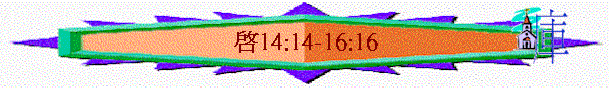
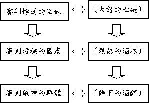

|
主 必 快 來 |
|||||
|
序 幕 |
開 始 |
中 段 |
尾 聲 |
結 局 |
結 語 |
|
簡介與意義 |
展開與前奏 |
警告與剛硬 |
刑罰與反抗 |
過去與更新 |
囑咐與回應 |
|
1-3 |
4-7 |
8-11 |
12-20 |
21:1-22:5 |
22:6-21 |
四.尾聲
--> 刑罰與反抗(12-20)
3.七碗的預備(14:14-15:8)
〜快要傾倒神忿怒的七碗，但在未倒之先，先預備材料及工具
A.預備忿怒的大酒
a.收莊稼
「我又觀看，見有一片白雲，雲上坐著一位好像人子，頭上戴著金冠冕，手裡拿著快鐮刀。又有一位天使從殿中出來，向那坐在雲上的大聲喊著說：「伸出你的鐮刀來收割；因為收割的時候已經到了，地上的莊稼已經熟透了。」那坐在雲上的，就把鐮刀扔在地上，地上的莊稼就被收割了。」14:14-16
「萬軍之耶和華以色列的神如此說：巴比倫（原文作女子）城好像踹穀的禾場；再過片時，收割他的時候就到了。」耶51:33
〜好像「人子」，似乎從他帶金冠冕，看出他應是基督。
〜收莊稼時候到了，如審判到了一樣，神要分別惡人出來，行祂的審判。
b.割葡萄
「又有一位天使從天上的殿中出來，他也拿著快鐮刀。又有一位天使從祭壇中出來，是有權柄管火的，向拿著快鐮刀的大聲喊著說：「伸出快鐮刀來，收取地上葡萄樹的果子，因為葡萄熟透了！」
那天使就把鐮刀扔在地上，收取了地上的葡萄，丟在神忿怒的大酒醡中。那酒醡踹在城外，就有血從酒醡裡流出來，高到馬的嚼環，遠有六百里。」14:17-20
〜另一使者將會割葡萄製酒，此酒是神忿怒的大酒，有血從酒酢流出，所流的血容量何等的大，高有馬的嚼環這麼高，闊有六百里，所以此忿恕的酒帶出的痛苦、死傷是何等的大，何等的闊，何等的廣！
B.預備傾酒的使者
「我又看見在天上有異象，大而且奇，就是七位天使掌管末了的七災，因為神的大怒在這七災中發盡了。」15:1
C.預備飲酒的前奏
「我看見彷彿有玻璃海，其中有火攙雜。又看見那些勝了獸和獸的像並他名字數目的人，都站在玻璃海上，拿著神的琴，唱神僕人摩西的歌，和羔羊的歌，說：主神全能者啊，你的作為大哉！奇哉！萬世（或作：國）之王啊，你的道途義哉！誠哉！主啊，誰敢不敬畏你，不將榮耀歸與你的名呢？因為獨有你是聖的。萬民都要來在你面前敬拜，因你公義的作為已經顯出來了。」15:2-4
〜世人飲神忿怒的酒前，天上有前奏，有得勝的人在玻璃海上(寶坐前就是玻璃海)，其中有火攙(代表有審判來臨)
〜他們唱神僕摩西的歌和羔羊的歌，摩西的歌重點是神在埃及地施行刑罰及拯救，羔羊的歌也是神的拯救與主回來的審判，所以兩歌一同所表達是神的大能，榮耀，公義。
D.預備盛酒的金碗
「此後，我看見在天上那存法櫃的殿開了。那掌管七災的七位天使從殿中出來，穿著潔白光明的細麻衣（細麻衣；有古卷是寶石），胸間束著金帶。四活物中有一個把盛滿了活到永永遠遠之神大怒的七個金碗給了那七位天使。因神的榮耀和能力，殿中充滿了煙。於是沒有人能以進殿，直等到那七位天使所降的七災完畢了。」15:5-8
〜四活物中一個活物將盛滿神大怒的七個金碗(不普通的碗，而是金碗)交給七位天使。
〜此計劃充滿了神的榮耀與能，所以一出現，如煙一樣充滿了殿。 〜此計劃充滿了神的榮耀與能，所以一出現，如煙一樣充滿了殿。
4.傾盡的審判(16:1-20:3)
〜結構：結構：

A.審判悖逆的百姓(16:1-16)
「我聽見有大聲音從殿中出來，向那七位天使說：「你們去，把盛神大怒的七碗倒在地上。」
〜七碗中的頭六碗，似乎特別針對屬獸的百姓，他們雖受審判仍不悔改，甚至常作出頑抗。
a.直接的攻擊 -->地有毒瘡
「第一位天使便去，把碗倒在地上，就有惡而且毒的瘡生在那些有獸印記、拜獸像的人身上。」16:2
〜之前七印，七號，一開始的災禍都直接臨到人身上。
〜但末後的七碗，一開始直接攻擊人，使有獸記的人生毒瘡，受肉身痛苦，已再沒警告先兆了！
b.沒保留的受損 -->海變成血
「第二位天使把碗倒在海裡，海就變成血，好像死人的血，海中的活物都死了。」16:3
〜之前七號，海受損，只是三分一，但這次卻是全部，海中的活物全部死了！
(何等恐怖，海裏的活物比地上多不知幾多倍，竟全都死了)，海也變成血海了！此攻擊是毫不留情！
c.該受的報應 -->河水變血
「第三位天使把碗倒在江河與眾水的泉源裡，水就變成血了。我聽見掌管眾水的天使說：昔在、今在的聖者啊，你這樣判斷是公義的；他們曾流聖徒與先知的血，現在你給他們血喝；這是他們所該受的。我又聽見祭壇中有聲音說：是的，主神全能者啊，你的判斷義哉！誠哉！」16:4-7
〜河水變血代表甚麼，原來代表神公義的判斷，地上的人曾殺了先知、聖徒，現在他們受報應了(回應了第五印的聖徒控告—神不審判住在地上的人)，他們流了這麼多人血，到末日報應時候，他們所喝的是血，因眾水的泉源也變成血。
〜「祭壇中有聲音說」之前第五印在祭壇中的聖徒(為主犧牲)見此情景，不敢讚美神的公義。
d.極其的悖逆 -->日頭烤人
「第四位天使把碗倒在日頭上，叫日頭能用火烤人。人被大熱所烤，就褻瀆那有權掌管這些災的神之名，並不悔改將榮耀歸給神。」15:8-9
〜日頭本來是照好人，也是照歹人，給人光明，溫暖，但神要刑罰人，叫日烤人。
〜但人在刑罰中仍不悔改，仍悖逆，不將榮耀歸給神。
e.難忍的痛楚
-->
黑暗之災
「第五位天使把碗倒在獸的座位上，獸的國就黑暗了。人因疼痛就咬自己的舌頭；又因所受的疼痛，和生的瘡，就褻瀆天上的神，並不悔改所行的。」16:10-11
〜黑暗給人沒有安全，死亡的感覺，之前七號的第四號，日月星三分之一被擊打，已經令人感驚恐，將來獸的國è屬敵基督統治的國是完全黑暗了，那恐佈是何等的大！
〜加上之前毒瘡的痛苦，人實在難忍，要咬自己的舌頭。
〜但人在這情況下仍不悔改，褻瀆真神。
f.末日的爭戰 -->預備爭戰
「那三個鬼魔便叫眾王聚集在一處，希伯來話叫作哈米吉多頓。」16:16
(1)道路的預備
「第六位天使把碗倒在伯拉大河上，河水就乾了，要給那從日出之地所來的眾王預備道路。」16:12
〜「伯拉大河」即幼發拉底河，是當時羅馬帝國與東面其它國家分開的界限，末日時，河會乾，預備道路給眾主來。
〜「從日出之地」東方，東方會有眾王一同來。
(2)軍隊的預備
「我又看見三個污穢的靈，好像青蛙，從龍口、獸口並假先知的口中出來。他們本是鬼魔的靈，施行奇事，出去到普天下眾王那裡，叫他們在神全能者的大日聚集爭戰。」16:13-14
「那三個鬼魔便叫眾王聚集在一處，希伯來話叫作哈米吉多頓。」16:16
〜「三個污穢的靈，好像青蛙」，用青蛙的污穢、醜陋形容將會有三個污的靈從魔鬼、敵基督、假先知出來，迷惑眾王，叫他們聚集爭戰。
〜「哈米咭多頓」有軍隊聚集及宰殺之地意思，是自古以來有名戰爭地方，也是舊約的米吉多地，在猶太國西北，靠近他泊山，近迦密山。
「那日，耶路撒冷必有大大的悲哀，如米吉多平原之哈達臨門的悲哀。」亞12:11
「猶大王亞哈謝見這光景，就從園亭之路逃跑．．．．到了靠近以伯蓮的姑珥坡上擊傷了他。他逃到米吉多，就死在那裡。」王下9:27
「君王都來爭戰。那時迦南諸王在米吉多水旁的他納爭戰．．．」士5:19
〜有歷史家稱「此地乃聖經中最出名的戰場」；法國拿坡崙認為該地是足夠全世界軍隊參加作戰之地。
〜但此爭戰應在第六碗中仍未開始，只是預備，真到19:19至終的爭戰才出現。
(3)信徒的儆醒
「（看哪，我來像賊一樣。那警醒、看守衣服、免得赤身而行、叫人見他羞恥的有福了！）」16:15
〜人受迷惑肓目跟隨污穢的靈，行可憎的事，公然攻擊神，但信徒卻要儆醒，不要鬆懈，不玷污不潔，要清醒不被迷惑，因為主來像賊一樣，不知不覺來到，人若裝飾整齊，(有衣服)，不受迷惑，神必賜福。